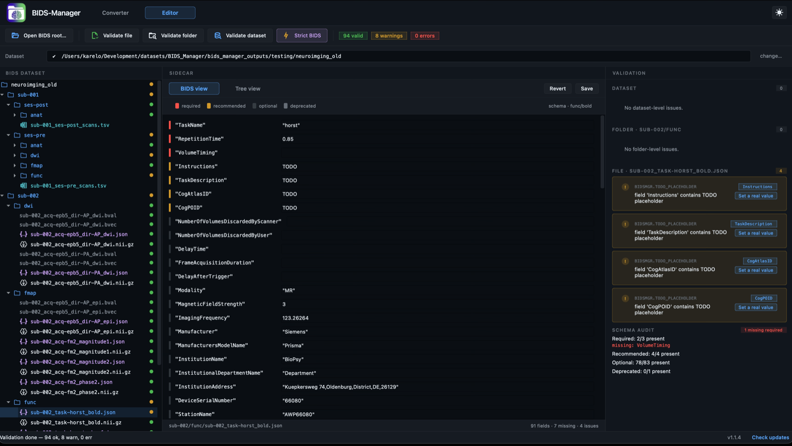

OL_0001
45DICOMs
9series
Standard pre-session protocol. T1w + two fMRI tasks (sparse + rest) + two fieldmap pairs.
The scenes on this page simulate the GUI's reactions to a real three-subject MRI dataset. Download the same dataset below to follow along on your own machine.
A real three-subject Siemens DICOM dump. Same data the scenes below use; download it if you want to run BIDS Manager against it yourself after watching.
Download raw MRI dataset example
Hosted on Mega.nz. The
#TqZlTaURWaN... fragment is
the AES decryption key, so the link works in any modern
browser without a Mega account.
A flat DICOM dump per subject, no series subfolders. This is how Siemens scanners typically export. Pick a subject below to see its series and what BIDS Manager will do with each one.
Standard pre-session protocol. T1w + two fMRI tasks (sparse + rest) + two fieldmap pairs.
Post-session scan with no anatomical reference. The validator will warn about it. One multiband BOLD, one fieldmap pair, one physio log.
Full research protocol. T2w + three fMRI tasks (multiband SBRefs) + diffusion (AP runs and a PA b0 reference) + two physio logs.
Series rows are coloured by BIDS datatype: blue for anat, green for func, amber for fmap, purple for dwi, teal for physio. Grey rows are skipped (scout / scanner report).
BIDS Manager has two views: the Converter (raw → BIDS) and the Editor (read, fix, validate). Hover or click a numbered marker on the screenshot to learn what each section of the window does.
Click any number on the screenshot to see what that section does. Click again (or press Esc) to dismiss.

Toggles between the Converter (raw → BIDS) and the Editor (read, fix, validate). Settings and the theme toggle live on the same top bar.
Tell BIDS Manager where your raw DICOM data lives, and where the BIDS dataset should land. The glyph on the left flips from circle to check when a path is valid.
The Scan… button kicks off the inventory walker. TSV: names the inventory file. Four status chips (valid / warnings / error / skipped) tick up live as the walker enumerates each series. Run conversion stays disabled until the scan finishes.
Browse the raw DICOM input folder, subject by subject. Read-only here; it's a navigator, not an editor.
The future BIDS layout (OUTPUT DATA TREE) and a schema-grouped structure view (FILTER / STRUCTURE) of every series, with quick filtering by entity.
The centre of gravity. One row per DICOM series, with the predicted basename, datatype, task, run and confidence at a glance. Every conversion decision is editable here; the schema-driven classifier's guesses are just defaults.
Schema-aware editor for the currently-selected row. Shows only the entities valid for that row's datatype + suffix, with required fields marked with a red asterisk. The PREDICTED PATH at the bottom updates as you type.
Bottom dock with tabs: BIDS preview (the future filesystem layout), Log (engine output), Conflicts and Statistics.
Click any number on the screenshot to see what that section does. Click again (or press Esc) to dismiss.

You're in the Editor: read the converted BIDS dataset, edit sidecars, run validation.
Open BIDS root picks the dataset. Validate file / folder / dataset run audits at three scopes. The Strict BIDS toggle swaps the validator's leniency; the severity chips summarise the current dataset's issues; the BusySpinner ticks while validation is running.
The converted BIDS layout with a status dot per file: green for clean, amber for warnings, red for errors. Click a file to open it in the centre pane.
JSON sidecars open a schema-aware form (with a Tree view fallback). TSV files open an editable table. NIfTI files open the tri-view + 4-D graph viewer.
Severity-coloured issue list. Click an item to jump to the offending file. The list updates automatically when you fix something in the file viewer.
Now that you know the layout, the next section walks the actual workflow: scanning the example dataset, reviewing the inventory, and running the conversion.
Now that you know what the GUI looks like, watch BIDS Manager react to the dataset step by step. Each scene re-creates the active panel in pure HTML, CSS and JS and animates the engine's response. Use the dots or the prev / next buttons to step through.
The Converter's first ask is two paths. The top bar accepts a raw folder; the next one is where BIDS Manager will write the dataset. Watch the inputs fill in.
The Scan button kicks off an inventory walker.
Status text streams the engine's stages; chips at the
right count up as the walker enumerates series,
separates valid from skipped, and stamps each row
with its bids_guess_*
entity tuple.
Every row is one DICOM series. The
BIDS preview column shows the basename BIDS
Manager will write to. Two pre-conversion signals
surface here: a warning for the
OL_0002 row (no anatomical found) and
an info note on the OL_0003
dir-PA diffusion run (the
classifier reroutes it into
fmap/_epi).
| id | ses | data | task | conf | predicted basename | ||
|---|---|---|---|---|---|---|---|
| ✓ | ✓ | sub-001 | pre | anat | — | 0.97 | sub-001_ses-pre_T1w |
| ✓ | ✓ | sub-001 | pre | func | rest | 0.95 | sub-001_ses-pre_task-rest_bold |
| ✓ | ✓ | sub-001 | pre | func | sparse | 0.82 | sub-001_ses-pre_task-sparse_bold |
| ✓ | ✓ | sub-001 | pre | fmap | — | 0.93 | sub-001_ses-pre_run-01_magnitude1 |
| ✓ | ! | sub-002 | post | ? | — | 0.31 | no anatomical reference found |
| ✓ | ✓ | sub-002 | post | func | mb | 0.96 | sub-002_ses-post_task-mb_bold |
| ✓ | P | sub-002 | post | physio | mb | 0.90 | sub-002_ses-post_task-mb_physio |
| ✓ | ✓ | sub-003 | — | anat | — | 0.97 | sub-003_acq-space_T2w |
| ✓ | ✓ | sub-003 | — | dwi | — | 0.94 | sub-003_acq-15_dir-AP_dwi |
| ✓ | i | sub-003 | — | fmap | — | 0.89 | sub-003_acq-15_dir-PA_epi
(rerouted) |
| − | sub-001 | pre | scout | — | — | (skipped) | |
| − | all | — | sr | — | — | (skipped) |
func/bold
The schema's guess is just a default. Click any cell
in the inspection table to overwrite it; the
BIDS preview strip at the bottom updates as
you type. Here we rename the sparse
task placeholder to its real label,
motor.
| id | ses | data | task | conf | predicted basename | ||
|---|---|---|---|---|---|---|---|
| ✓ | ✓ | sub-001 | pre | anat | — | 0.97 | sub-001_ses-pre_T1w |
| ✓ | ✓ | sub-001 | pre | func | sparse | 0.82 |
sub-001_ses-pre_task-sparse_bold
|
| ✓ | ✓ | sub-001 | pre | func | rest | 0.95 | sub-001_ses-pre_task-rest_bold |
| ✓ | ✓ | sub-001 | pre | fmap | — | 0.93 | sub-001_ses-pre_run-01_magnitude1 |
| ✓ | ! | sub-002 | post | ? | — | 0.31 | no anatomical found |
| ✓ | ✓ | sub-002 | post | func | mb | 0.96 | sub-002_ses-post_task-mb_bold |
func/boldsub-001/ses-pre/func/sub-001_ses-pre_task-sparse_bold.nii.gz
Select multiple rows, click Bulk edit…,
and apply one value to every selected cell. Here we
relabel the OL_0001 session from
pre to
baseline across all of
the subject's rows in one motion.
| id | ses | data | task | conf | predicted basename | ||
|---|---|---|---|---|---|---|---|
| ✓ | ✓ | sub-001 | pre | anat | — | 0.98 |
sub-001_ses-pre_T1w
|
| ✓ | ✓ | sub-001 | pre | func | rest | 0.95 |
sub-001_ses-pre_task-rest_bold
|
| ✓ | ✓ | sub-001 | pre | fmap | — | 0.93 |
sub-001_ses-pre_run-01_magnitude1
|
| ✓ | ✓ | sub-002 | post | func | mb | 0.96 | sub-002_ses-post_task-mb_bold |
| ✓ | ✓ | sub-003 | — | anat | — | 0.97 | sub-003_acq-space_T2w |
Multiple rows selected. Use Bulk edit… to apply one value to every selected cell.
Editing ses here rewrites the session entity on all 3 selected rows. The Bulk edit… dialog is faster for targeting other columns.
Click Run conversion. BIDS Manager stages each
subject in a private temp tree, runs the right backend
per row (dcm2niix for MRI,
vendored bidsphysio for
physio), then atomically renames into the BIDS root.
The fixups stage stitches the cross-file metadata
(fmap, IntendedFor,
scans.tsv) at the end.
| id | ses | data | task | predicted basename | ||
|---|---|---|---|---|---|---|
| ✓ | ✓ | sub-001 | pre | anat | — | sub-001_ses-pre_T1w |
| ✓ | ✓ | sub-001 | pre | func | rest | sub-001_ses-pre_task-rest_bold |
| ✓ | ✓ | sub-001 | pre | fmap | — | sub-001_ses-pre_run-01_magnitude1 |
| ✓ | ✓ | sub-002 | post | func | mb | sub-002_ses-post_task-mb_bold |
| ✓ | ✓ | sub-003 | — | dwi | — | sub-003_acq-15_dir-AP_dwi |
Conversion in progress. The Log tab below shows the engine's stages in real time.
Dcm2niixDirect . anat / func / dwi / fmap (29 rows)
PhysioDcmBackend . physio (1 row)
Conversion finished, BIDS dataset on disk. Switch to the Editor view, point it at the BIDS root, and click a sidecar to fix metadata. The form is generated from the BIDS schema for the row's datatype + suffix.
Click a .nii.gz in the
BIDS tree and the centre pane swaps to the volume
viewer: sagittal, coronal, axial, all sharing one
crosshair. For 4-D BOLDs there's also a graph mode
with the per-voxel time series.
Two layers: BIDS Manager's schema audit and the
official bidsschematools
validator. The severity chips tick up as the engine
runs; the issue list below explains each finding and
points back at the offending file.
Every scene above will have its bidsmgr-*
equivalent listed here. The full flow for the example
dataset, end to end, is just four commands:
# 1. Scan the raw DICOM tree into an inventory TSV bidsmgr-scan ~/Downloads/neuroimaging_unit_new ~/Downloads/inv.tsv # 2. (Optional) edit inv.tsv in any spreadsheet, then rebuild # the BIDS names from your edits bidsmgr-rebuild ~/Downloads/inv.tsv # 3. Convert. Stages per-subject and atomic-renames on success bidsmgr-convert ~/Downloads/inv.tsv ~/Documents/bids_export # 4. Validate. Two-layer: bidsmgr's schema audit + bidsschematools bidsmgr-validate ~/Documents/bids_export
The GUI and CLI share the same engine. Anything the tutorial shows the GUI doing, you can reproduce headlessly for a batch of subjects.